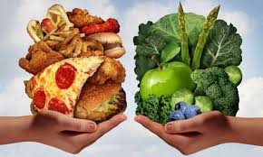

Einführung
Ungesunde Ernährung ist ein großes Problem in unserer heutigen Gesellschaft. Besonders Kinder und Jugendliche essen oft zu viele süße, fettige und stark verarbeitete Lebensmittel.
Viele Menschen wissen nicht genau, wie stark Ernährung die Gesundheit beeinflusst. Die Folgen treten oft erst nach einiger Zeit auf und werden deshalb unterschätzt.
Auf dieser Website erkläre ich, was ungesunde Ernährung ist, welche Lebensmittel und Getränke problematisch sind und wie sie den Körper beeinflussen.